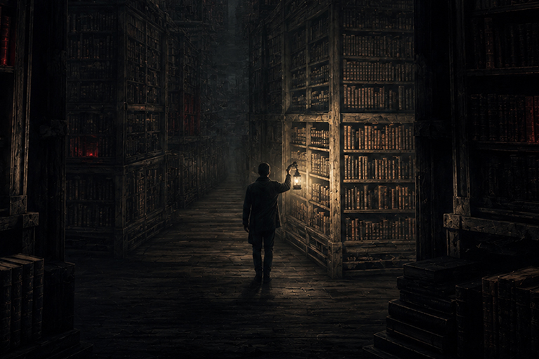
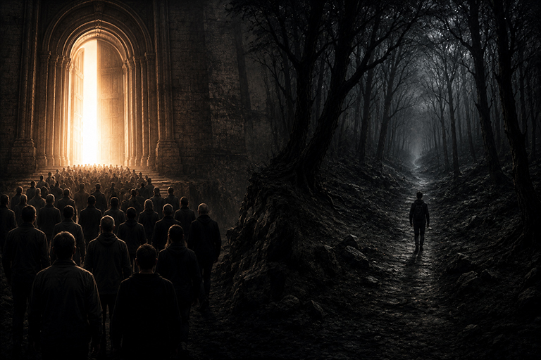

A verdade não é reveladora !

A maioria das pessoas gosta de acreditar que busca a verdade.
Mas observe qualquer discussão sobre religião, política, ciência, comportamento humano ou até futebol. As pessoas raramente estão investigando. Na maioria das vezes, estão defendendo.
E talvez isso revele algo desconfortável sobre nós: talvez a verdade não seja sempre o nosso primeiro interesse. Talvez, antes dela, venha a necessidade de segurança.
O cérebro não gosta de viver na dúvida
A incerteza exige energia. Quando não sabemos o que vai acontecer, o cérebro entra em estado de alerta.
Ele tenta prever, organizar, classificar e encontrar algum tipo de resposta.
Por isso, muitas vezes preferimos uma resposta ruim a nenhuma resposta.
A dúvida cansa. A certeza descansa.
“A verdadeira sabedoria está em reconhecer a própria ignorância.” — Sócrates

A certeza funciona como abrigo psicológico
Quando encontramos uma explicação que parece responder nossas dúvidas, sentimos alívio.
Não necessariamente porque descobrimos a verdade.
Mas porque reduzimos a angústia de não saber.
Ideias simples costumam se espalhar com facilidade porque oferecem algo sedutor: uma explicação pronta para um mundo complexo.
“A dúvida é uma condição desconfortável. A certeza é uma condição ridícula.” — Voltaire
Quando deixamos de ter crenças e passamos a ser crenças
Algumas ideias deixam de ser apenas opiniões.
Elas passam a fazer parte da identidade.
Quando isso acontece, questionar uma crença parece atacar a pessoa.
A crítica deixa de atingir a ideia e passa a atingir o ego.
“Não existem fatos, apenas interpretações.” — Friedrich Nietzsche

O viés de confirmação mora em todos nós
Depois que acreditamos em algo, tendemos a procurar provas que confirmem essa crença.
Ao mesmo tempo, ignoramos aquilo que ameaça nossas certezas.
O problema não é acreditar.
O problema é confundir confirmação com verdade.
“O problema da humanidade é que os estúpidos estão cheios de certezas e os inteligentes cheios de dúvidas.” — Bertrand Russell

E se a verdade não for o que estamos procurando?
Talvez o ser humano não busque a verdade em primeiro lugar.
Talvez busque estabilidade.
Pertencimento.
Segurança.
Talvez a certeza seja apenas uma forma elegante de fugir da angústia de não saber.

“A maioria das pessoas não teme estar errada. Teme descobrir que nunca teve certeza de nada.” — Mente Crua